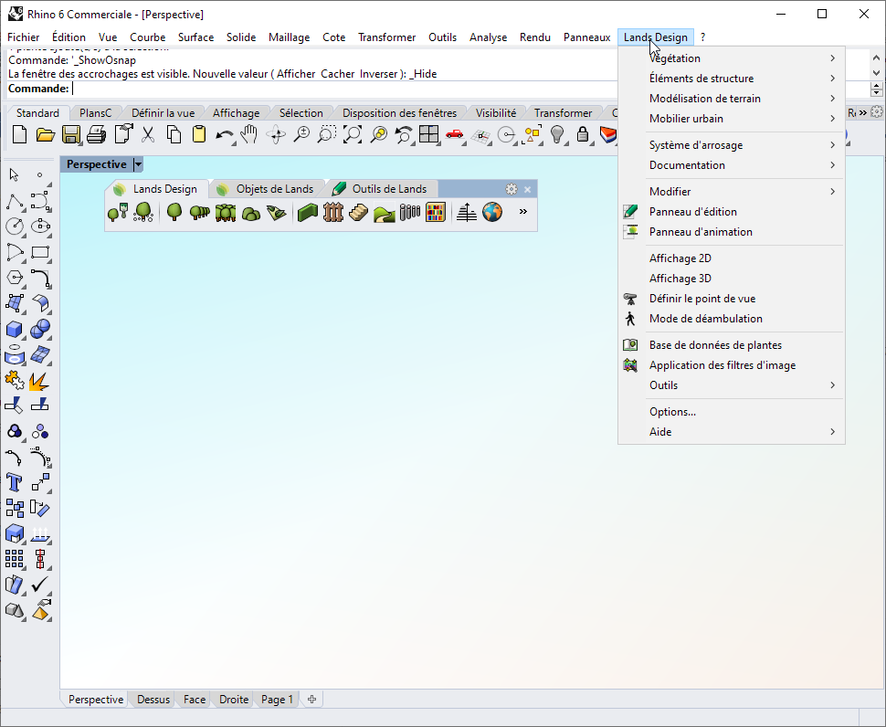

Le menu déroulant Lands Design présente la plupart des commandes de l'application. Tous les objets et tous les outils de Lands Design qui se trouvent dans les barres d'outils apparaissent avec leurs options.

Menu déroulant de Lands Design.
REMARQUE : Le menu déroulant devrait apparaître quand Lands Design est chargé dans la session actuelle de Rhino après son installation. S'il n'apparaît pas, Lands Design pourrait utiliser un ancien fichier "landdesign.tb" (dans Rhino 4.0) ou "landsdesign.rui" (dans Rhino 5). Dans ce cas, vous devez supprimer ce fichier manuellement, désinstaller Lands Design et le réinstaller. Les fichiers "landsdesign.tb" / "landsdesign.rui" se trouvent dans les dossiers suivants :